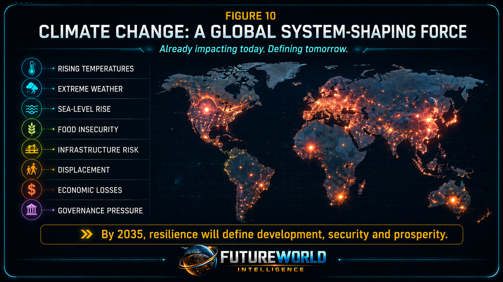
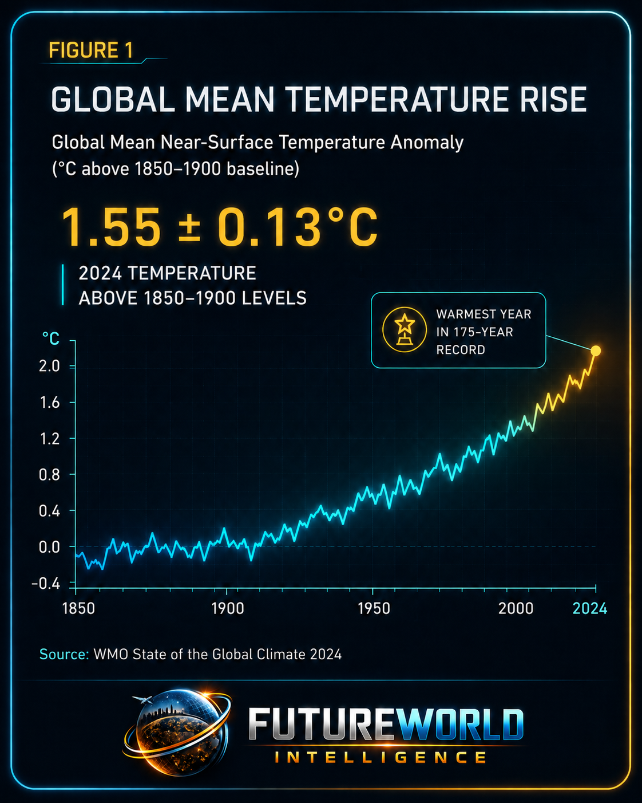
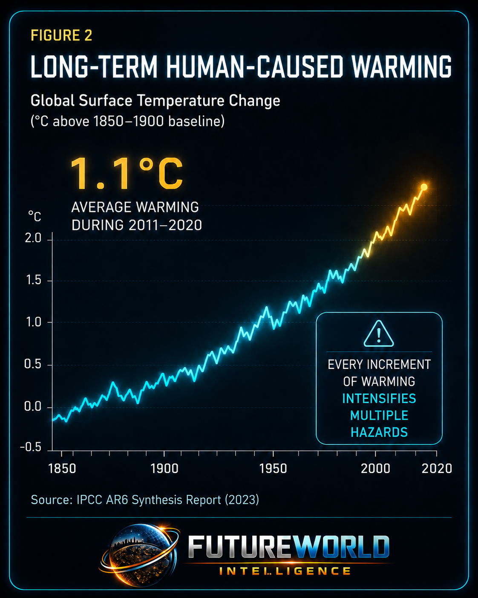
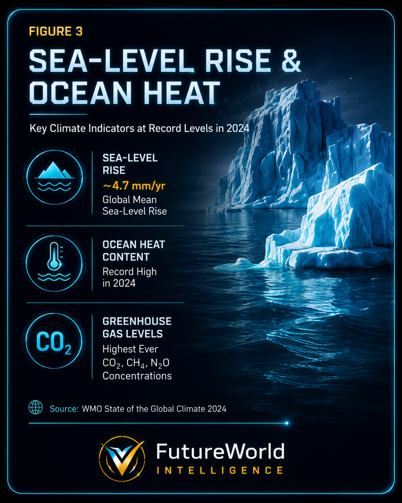
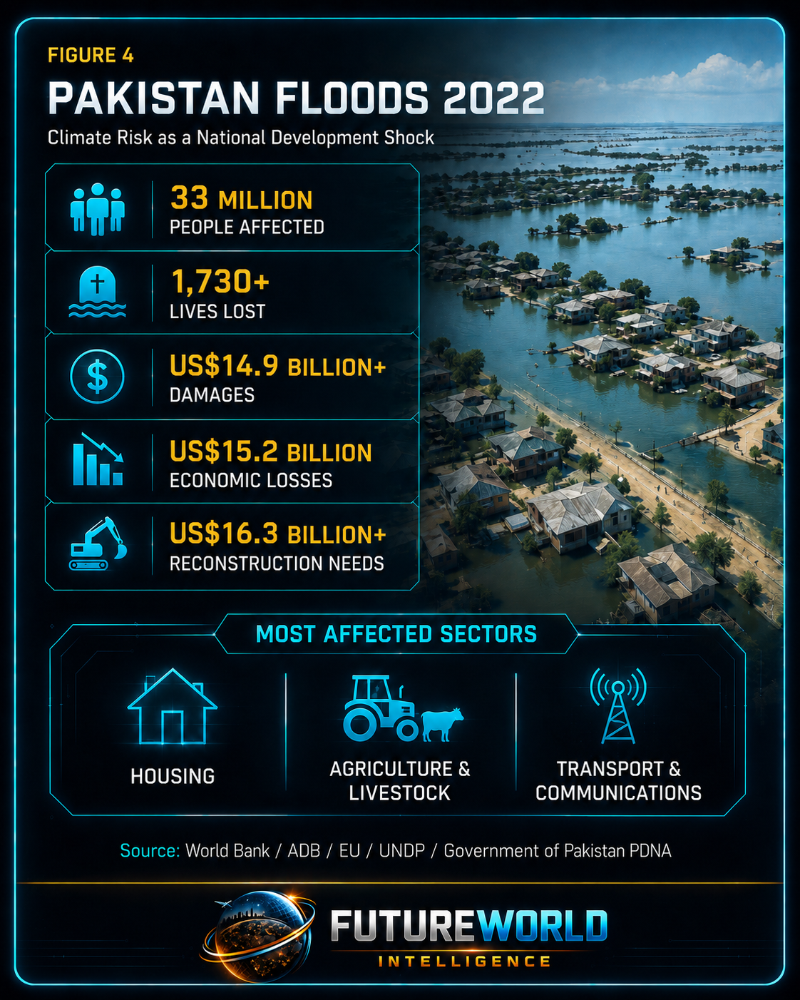
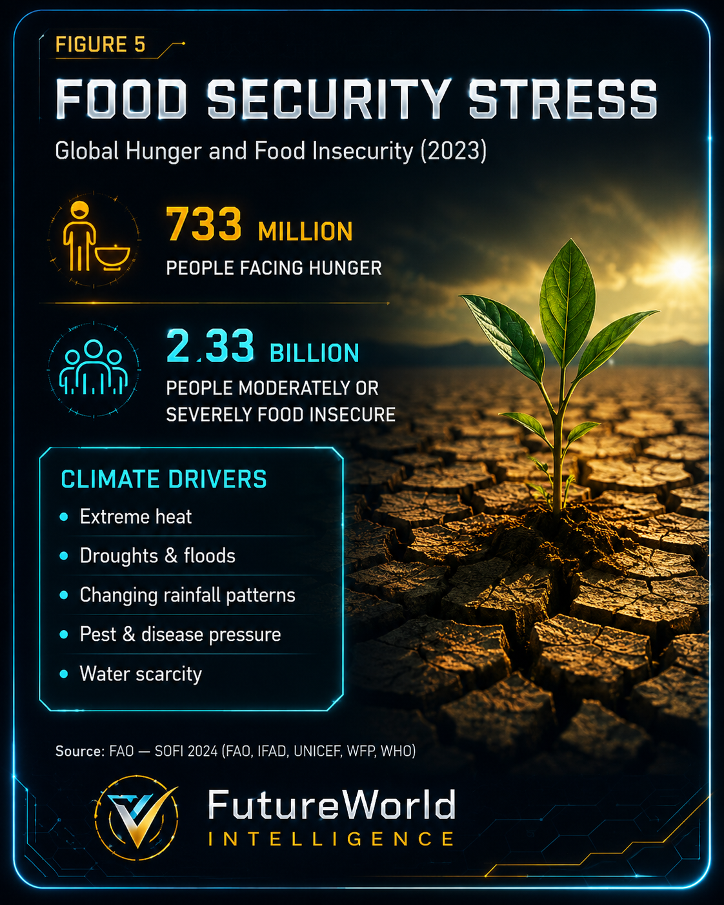
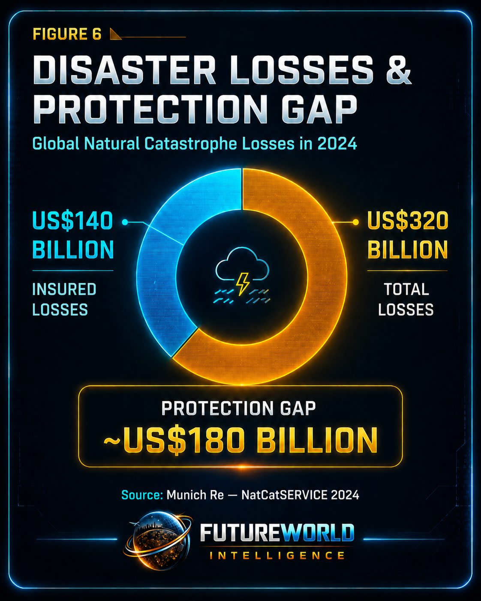
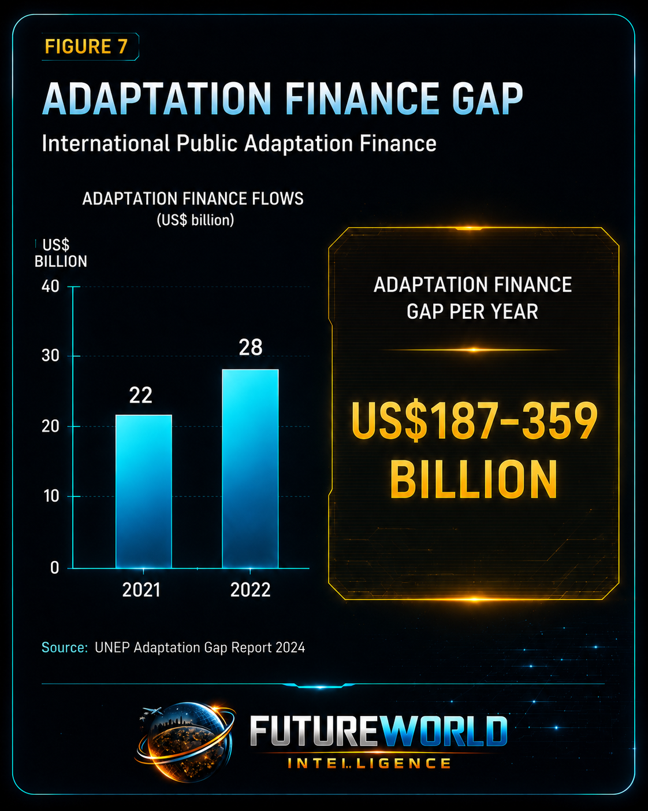
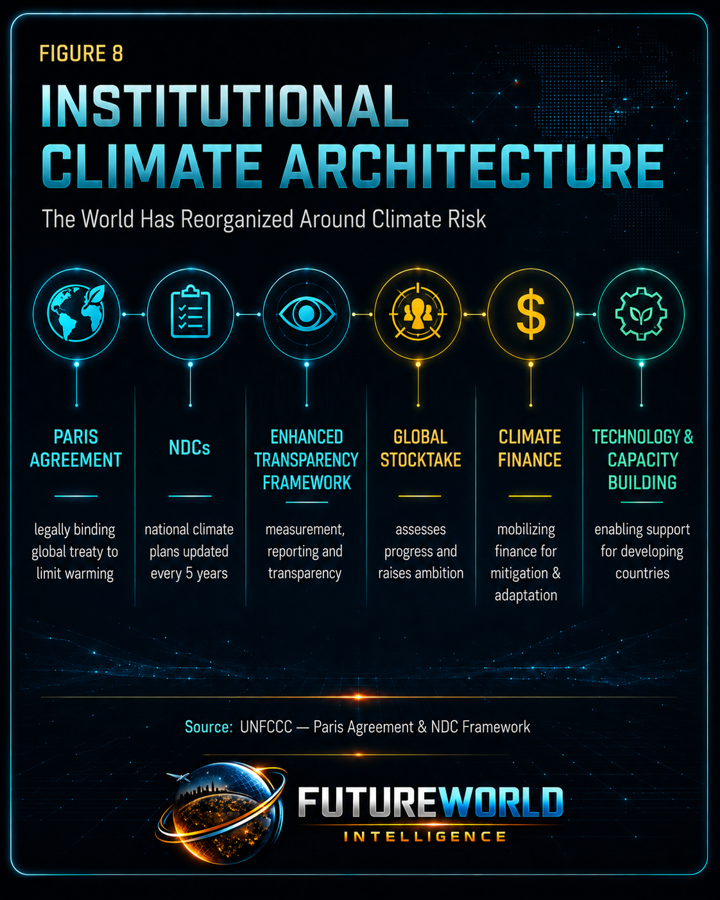
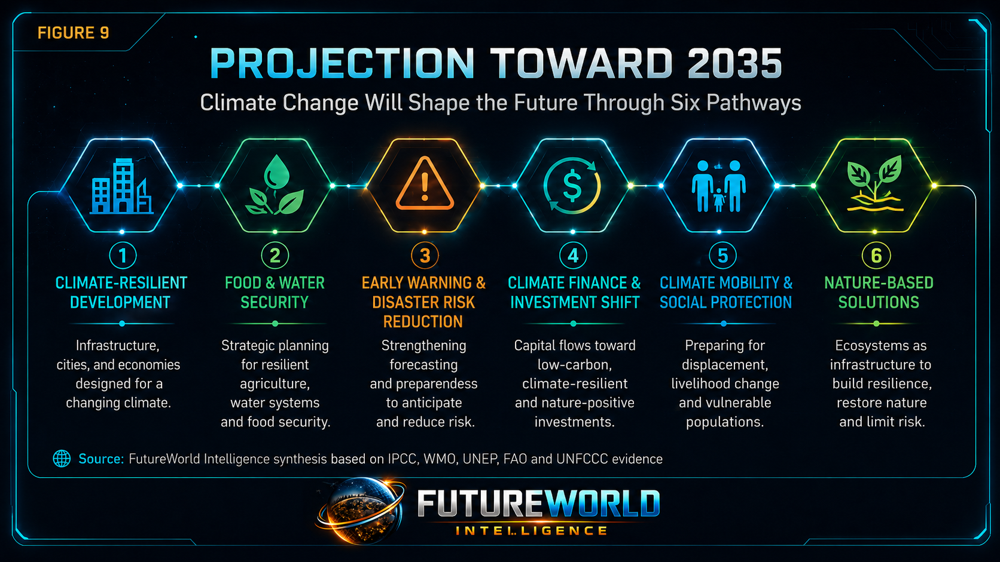

Document Control and Responsible Use Statement
This report is prepared for educational, policy-briefing, public-intelligence and strategic foresight purposes. It is intended to inform policymakers, public-sector officials, researchers, students, civil-society organizations, educators, development practitioners, climate professionals and community institutions about the evidence base supporting the claim that climate change is no longer only an environmental issue. It has become a global system-shaping force.
This report is not legal, financial, engineering, insurance, agricultural, medical or investment advice. It does not represent the official position of any government, multilateral institution, university, corporation, donor agency or research body named within it.
The report is based on a structured evidence-review approach. Quantitative claims are drawn from primary institutional sources wherever possible, including the Intergovernmental Panel on Climate Change, World Meteorological Organization, United Nations Framework Convention on Climate Change, United Nations Environment Programme, Food and Agriculture Organization of the United Nations, World Bank, Asian Development Bank, European Union, United Nations Development Programme and other reputable sources. Where estimates differ, the report presents the figure with source context and responsible interpretation.
This report uses the term climate change in its scientific and policy sense: long-term changes in the climate system driven mainly by human-caused greenhouse-gas emissions, interacting with natural variability and local vulnerability. It also distinguishes climate-related hazards from geophysical hazards. Earthquakes and tsunamis are not caused by climate change; however, countries exposed to both climate and geophysical risks need integrated multi-hazard governance.
Executive Summary
Climate change is one of the principal forces shaping the global future toward 2035 because it has moved beyond environmental concern into the core systems of development, infrastructure, finance, food security, health, migration, disaster risk, public administration and international governance.
The central argument of this report is that climate change is no longer only a problem of temperature. It is becoming the global risk baseline under which all societies must now plan. It affects the physical conditions of life — heat, rainfall, drought, floods, sea level, ocean systems, glaciers, ecosystems, soils, water availability and extreme weather — and then transmits those physical changes into human systems.
Three lines of evidence support treating climate change as a system-shaping force. First, the scientific foundation is clear. The IPCC states that human activities have unequivocally caused global warming, with global surface temperature reaching approximately 1.1°C above the 1850–1900 baseline during 2011–2020. The IPCC also states that human-caused climate change is already affecting many weather and climate extremes in every region of the world, producing widespread adverse impacts and losses and damages for people and nature.
Second, observed climate indicators show that the planetary baseline is shifting. The World Meteorological Organization reports that 2024 was the warmest year in the 175-year observational record, with global mean near-surface temperature of 1.55 ± 0.13°C above the 1850–1900 average. WMO also highlights record or near-record climate indicators, including ocean heat, sea-level rise, greenhouse-gas concentrations and extreme weather events.
Third, climate impacts are already producing development shocks. Pakistan’s 2022 floods affected 33 million people, caused more than 1,730 deaths, produced damages exceeding US$14.9 billion, caused economic losses of about US$15.2 billion and created reconstruction needs of at least US$16.3 billion. The most affected sectors included housing, agriculture and livestock, and transport and communications.
Climate change also has a strong institutional signal. The Paris Agreement, Nationally Determined Contributions, Enhanced Transparency Framework, Global Stocktake, climate finance mechanisms, adaptation plans, early warning systems, loss-and-damage discussions and the growing adaptation finance gap show that the world has already reorganized governance systems around climate risk.

1. Core Thesis: Why Climate Change Qualifies as a Future-Shaping Force
Climate change qualifies as a global future-shaping force because it alters the biophysical conditions upon which human societies, economies, infrastructures, ecosystems and institutions depend.
Historically, societies planned agriculture, settlements, water systems, roads, bridges, public health systems, hydropower, forests, disaster management and infrastructure around expected climatic ranges. Climate change destabilizes those assumptions. Temperature regimes are shifting. Rainfall patterns are changing. Heatwaves are intensifying. Sea level is rising. Ocean heat is increasing. Glaciers are retreating in many regions. Flood, drought, wildfire, storm and coastal risks are becoming more complex. Ecosystems and food systems are under growing pressure.
This makes climate change different from an isolated environmental problem. It is a risk multiplier that affects many sectors at once.
Temperature, rainfall, floods, droughts, sea level, oceans, glaciers and ecosystems are shifting.
Food, water, health, livelihoods, infrastructure, public finance, migration and security are affected.
Treaties, NDCs, finance, early warning, adaptation and resilient development are becoming central.
A useful test for any claim that a force is future-shaping is whether it has moved beyond scientific observation into the reorganization of human systems. Climate change has crossed that threshold. It is now embedded in national development planning, donor financing, insurance risk, disaster management, infrastructure standards, agricultural policy, energy transition, urban planning, public health and international diplomacy.

2. Scientific Basis: The Climate Baseline Has Shifted
The scientific basis of climate change rests on a clear causal chain: human activities have increased greenhouse-gas concentrations in the atmosphere; these gases trap heat; global temperature rises; warming changes the atmosphere, ocean, cryosphere, biosphere and hydrological cycle; these changes increase the probability and intensity of multiple climate-related hazards.
The IPCC’s headline conclusion is direct: human activities, principally through greenhouse-gas emissions, have unequivocally caused global warming. Global surface temperature reached approximately 1.1°C above 1850–1900 levels during 2011–2020. This statement is important because it establishes causation, not only correlation.
The IPCC also states that widespread and rapid changes have occurred in the atmosphere, ocean, cryosphere and biosphere. Human-caused climate change is already affecting many weather and climate extremes in every region across the globe. This has led to widespread adverse impacts and related losses and damages to nature and people.
The future significance is equally important. The IPCC warns that every increment of global warming will intensify multiple and concurrent hazards. This means climate risk is not static. A warmer world produces greater and more complex exposure to heat extremes, heavy precipitation, drought, fire weather, sea-level rise, glacier-related hazards, ecosystem stress and food and water insecurity.
Climate risk is also compound and cascading. Heat can intensify drought. Drought can reduce crop productivity. Food stress can raise prices. High prices can worsen poverty. Poverty can increase vulnerability to disaster. Disaster can damage infrastructure. Damaged infrastructure can reduce access to health, education, markets and governance services. This chain shows how a climate signal becomes a development crisis.

3. Observed Climate Evidence: From Scientific Warning to Present Reality
Climate change is shaping the future because it is already reshaping the present. The evidence is visible in global indicators and in national and local impact events.
3.1 Global Mean Temperature Rise
Global mean temperature rise is the most direct indicator of planetary warming. WMO reports that 2024 reached 1.55 ± 0.13°C above the 1850–1900 average, making it the warmest year in the 175-year observational record.
This does not mean that the long-term Paris Agreement threshold has been formally exceeded, because the Paris temperature goal is assessed over longer-term averages rather than a single year. However, a single year above 1.5°C is still highly significant. It shows how close the world is to the temperature limit that governments agreed to pursue efforts to avoid.
A warmer baseline increases the likelihood and intensity of heat stress, evapotranspiration, energy demand for cooling, crop stress, wildfire conditions, glacier melt and heavy precipitation potential. The atmosphere can hold more moisture as it warms, which can increase the intensity of extreme rainfall events where weather systems supply sufficient moisture and lift.
3.2 Ocean Heat and Sea-Level Rise
Climate change is not only an atmospheric phenomenon. The ocean absorbs a large share of excess heat in the climate system. Rising ocean heat contributes to marine heatwaves, coral stress, changes in fisheries, stronger moisture supply for storms and long-term thermal expansion of seawater.
Sea-level rise is a long-duration risk because it accumulates over time. It affects coastal cities, ports, deltas, beaches, mangroves, low-lying islands, estuaries, coastal agriculture, groundwater salinity and storm-surge exposure. Once sea-level rise is locked into the climate system, many impacts persist for centuries.
This is why coastal adaptation, mangrove restoration, early warning, land-use planning, storm-surge modelling, drainage improvement and resilient infrastructure are becoming central development priorities.

3.3 Extreme Weather and the New Risk Environment
Climate change does not mean every weather event is caused by climate change. Weather still has natural variability. However, climate change changes the background conditions in which weather occurs. It can make some extremes more frequent, intense, longer-lasting or more damaging, depending on the hazard and region.
Extreme heat is one of the clearest examples. Higher average temperatures increase the probability of dangerous heatwaves. Heavy rainfall is also expected to intensify in many regions because a warmer atmosphere can hold more moisture. Drought risk can increase where warming raises evaporation and where rainfall becomes more variable. Coastal flooding risk increases where sea-level rise raises the baseline upon which storms act.
This is the practical meaning of climate change: the old risk maps are becoming less reliable.
4. Climate Risk as Development Shock: The Pakistan 2022 Floods
Pakistan’s 2022 floods are a powerful example of climate risk as a national development shock. The floods affected 33 million people and caused more than 1,730 deaths. The Post-Disaster Needs Assessment estimated damages above US$14.9 billion, economic losses of about US$15.2 billion and reconstruction needs of at least US$16.3 billion.
The most affected sectors were housing, agriculture and livestock, and transport and communications. Sindh was the worst affected province, followed by Balochistan, Khyber Pakhtunkhwa and Punjab.
The floods demonstrate five important lessons. First, climate-related disasters are not only humanitarian emergencies. They are also development, infrastructure, fiscal, health and governance crises. Second, the poorest and most vulnerable communities often carry the heaviest burden. Loss of housing, livestock, crops, documents, tools, roads, schools and health access can create long-term poverty impacts. Third, agriculture is a major transmission channel. Floods can destroy standing crops, kill livestock, damage irrigation systems, delay planting seasons and disrupt food supply chains.
Fourth, infrastructure failure multiplies human suffering. Damaged roads, bridges, schools, hospitals, electricity systems and communications networks reduce the ability of government and communities to respond. Fifth, reconstruction must be climate-resilient. Rebuilding the same vulnerable systems in the same vulnerable way can reproduce the next disaster.
Pakistan is a strategic case for FutureWorld Intelligence because it includes glaciers, mountain watersheds, monsoon systems, hill torrents, river floods, arid landscapes, coastal exposure, agriculture dependence, vulnerable rural livelihoods and fast-growing settlements. Climate change in Pakistan is not a single-sector issue. It is a governance, finance, resilience, livelihood and community-development challenge.

5. Food Security, Agriculture and Livelihood Systems
Climate change affects food systems through multiple pathways. Heat stress reduces crop productivity. Drought reduces water availability. Floods destroy standing crops. Extreme rainfall damages soil, roads, storage, markets and irrigation systems. Warmer conditions can shift pest and disease ranges. Water scarcity can reduce livestock productivity. Coastal salinity can damage agricultural land. Disasters can disrupt food supply chains and increase prices.
Food insecurity is therefore one of the most important transmission channels between climate change and human security.
Global food security is already under pressure from conflict, economic shocks, inequality and climate-related extremes. Climate change interacts with these drivers rather than acting alone. This is important for responsible interpretation: hunger is not caused by climate change alone, but climate shocks can worsen food insecurity where governance, poverty, conflict, market instability, water stress and weak infrastructure already exist.
For countries dependent on agriculture, climate change affects rural livelihoods directly. Farmers face uncertain rainfall, crop losses, livestock disease, heat stress, water shortages and market volatility. Poor rural households have fewer assets to absorb these shocks and fewer options for recovery.
By 2035, climate-smart agriculture will become a strategic requirement. This includes drought-tolerant and heat-tolerant varieties, resilient seed systems, water harvesting, soil conservation, slope stabilization, agroforestry, crop diversification, climate advisories, livestock protection, pest monitoring, crop insurance, food storage and market access.
Food security will increasingly depend on climate intelligence: the ability to monitor weather, understand risk, advise farmers, protect watersheds, restore soils, diversify livelihoods and plan ahead.

6. Infrastructure, Cities and the Economics of Disaster Loss
Infrastructure is one of the most exposed sectors in a warming world. Roads, bridges, culverts, schools, hospitals, water systems, drainage networks, irrigation channels, houses, power lines, ports, telecommunications systems and public buildings are often designed using historical climate assumptions. Those assumptions are becoming less reliable.
Extreme heat can damage roads, reduce labour productivity, increase cooling demand, stress electricity systems and make cities dangerous for vulnerable people. Extreme rainfall can overwhelm drainage systems, damage bridges, trigger landslides, destroy culverts and flood settlements. Drought can reduce hydropower generation, water supply and agricultural output. Sea-level rise can threaten coastal infrastructure and ports. Wildfires can damage forests, homes, power lines and air quality.
Climate change therefore changes the economics of infrastructure. It increases capital costs, maintenance costs, insurance costs, reconstruction costs and public-debt exposure. It also forces governments to think differently about cost-benefit analysis. A road that is cheap today but fails under future rainfall may be more expensive over its lifecycle than a climate-resilient design.
Disaster-loss economics is increasingly becoming part of national financial planning. When disasters cause large uninsured losses, governments must divert budgets from education, health, development and public services to emergency response and reconstruction. Households lose assets. Businesses lose continuity. Farmers lose seasons. Children lose schooling. Poor communities lose recovery time.
By 2035, resilient infrastructure will become a key measure of national competitiveness and social stability. Climate-resilient infrastructure will not be optional. It will be a core development standard.

7. Adaptation Finance and the Climate Finance Gap
Climate finance is one of the strongest indicators that climate change has become a system-shaping force. The world has not only studied climate change; it has created institutions, funds, mechanisms, reporting systems and negotiation processes around it.
Adaptation finance is especially important for developing countries. These countries often face high vulnerability but have limited fiscal space, weaker infrastructure and lower historical responsibility for emissions. Adaptation includes flood protection, water harvesting, drought preparedness, climate-resilient agriculture, early warning, coastal protection, ecosystem restoration, health-system preparedness, resilient housing and disaster risk reduction.
UNEP reports that international public adaptation finance flows to developing countries increased from US$22 billion in 2021 to US$28 billion in 2022. This is progress, but it remains far below need. UNEP estimates the adaptation finance gap at approximately US$187–359 billion per year.
This gap matters because delayed adaptation increases future loss and damage. If communities lack flood protection, drainage, early warning, climate information, water storage or resilient infrastructure, each hazard event causes more damage than necessary.
Climate finance shapes the future in three ways. First, it determines who can adapt and who remains exposed. Second, it influences national development priorities and project pipelines. Third, it creates a new field of institutional capacity: countries must be able to design bankable climate projects, measure outcomes, meet safeguards and report results.
By 2035, climate finance readiness may become as important as technical climate knowledge. Countries and institutions that can translate climate risk into credible, fundable, measurable projects will be better positioned to protect communities and attract resources.

8. Global Climate Governance: From Science to Institutional Architecture
Climate change is a future-shaping force because the world has already built a permanent institutional architecture around it.
The Paris Agreement is a legally binding international treaty on climate change. Its goal is to hold the increase in global average temperature to well below 2°C above pre-industrial levels and pursue efforts to limit warming to 1.5°C. The Agreement works through a five-year cycle of increasingly ambitious climate action, with countries submitting Nationally Determined Contributions.
Nationally Determined Contributions are national climate action plans. Through NDCs, countries communicate what they intend to do to reduce greenhouse-gas emissions and adapt to the impacts of climate change. Each successive NDC is expected to represent increased ambition.
The Paris Agreement also includes support for finance, technology and capacity-building. This is crucial because climate action requires more than ambition. It requires institutions, investment, skills, data, technology transfer, monitoring and implementation capacity.
The Enhanced Transparency Framework requires countries to report transparently on actions taken and progress made in mitigation, adaptation and support provided or received. The information gathered through this framework feeds into the Global Stocktake, which assesses collective progress toward long-term climate goals and informs the next round of ambition.
This architecture proves that climate change has moved from scientific warning to governance structure. It is now embedded in diplomacy, national planning, donor systems, development finance, public reporting and international accountability.

9. Sectoral Impact Analysis
Climate change affects multiple human and natural systems simultaneously. Its power as a future-shaping force lies in horizontal diffusion across sectors.
9.1 Temperature, Heat Stress and Human Productivity
Rising mean temperatures and increasing heat extremes affect public health, labour productivity, agriculture, livestock, energy demand, water use and urban livability. Outdoor workers, elderly people, children, people with chronic disease and poor households are especially vulnerable.
Heat stress can reduce productivity in agriculture, construction, transport and outdoor public services. It can also increase electricity demand for cooling, placing pressure on energy systems. In cities, the urban heat island effect can make nighttime temperatures dangerous by reducing the body’s ability to recover.
By 2035, heat risk may influence building codes, school timings, work-hour regulations, city greening, public cooling centers, health warnings, electricity planning and labour protections.
9.2 Floods, Cloudbursts and Extreme Rainfall
A warmer atmosphere can hold more moisture, increasing the potential intensity of heavy rainfall where weather systems are favourable. In mountain regions, steep watersheds, deforested slopes, blocked drainage, unplanned settlements and weak infrastructure can convert intense rainfall into flash floods, landslides and hill torrents.
The term cloudburst is often used publicly for sudden, intense rainfall over a short period. Whether each event is formally classified as a cloudburst depends on meteorological criteria, but the risk of short-duration intense rainfall is an important planning concern in many vulnerable landscapes.
Flood-risk reduction requires watershed restoration, slope stabilization, drainage improvement, floodplain zoning, early warning, road and bridge redesign, community preparedness and land-use control.
9.3 Water Security and Watershed Resilience
Climate change affects water through rainfall variability, drought, snow and glacier changes, evaporation, soil moisture, groundwater recharge, streamflow timing and flood pulses. In mountain and semi-arid areas, water security is directly connected to watershed health.
Forests, rangelands, wetlands, soils, springs, streams and slopes should be treated as natural water infrastructure. Degraded watersheds produce faster runoff, higher erosion, lower infiltration, lower spring recharge and greater flood risk.
Nature-based solutions such as assisted natural regeneration, afforestation, watershed restoration, grazing management, soil conservation, check dams, water harvesting and spring protection can support both adaptation and livelihoods.
9.4 Public Health and Displacement
Climate change affects health through heat stress, waterborne disease, vector-borne disease, malnutrition, air pollution, disaster trauma, mental stress and displacement. Floods can contaminate water and damage health facilities. Droughts can reduce food availability and income. Heatwaves can increase mortality among vulnerable groups.
Displacement is another major risk pathway. Many climate-related movements are internal: from floodplains to safer areas, drought-affected villages to towns, or disaster-hit settlements to temporary camps. This creates pressure on housing, employment, water, sanitation, education, health services and local governance.
By 2035, climate mobility will require planning, not only emergency response.
9.5 Ecosystems, Biodiversity and Natural Infrastructure
Climate change affects forests, wetlands, rangelands, soils, rivers, coastal ecosystems, species distribution, pest outbreaks, fire risk and ecosystem services. Ecosystem degradation also increases human vulnerability. When forests are degraded, slopes become less stable. When wetlands are drained, flood buffering declines. When mangroves are removed, coastal protection weakens. When soils degrade, agricultural resilience falls.
Ecosystems must therefore be understood as natural infrastructure. They regulate water, store carbon, protect slopes, support livelihoods, reduce flood risk and sustain biodiversity.
By 2035, countries that restore ecosystems will not only protect nature. They will strengthen national resilience.
10. Country and Regional Illustrations
10.1 Pakistan: Climate Risk as Development and Governance Challenge
Pakistan illustrates how climate exposure can become a national development challenge. Its geography includes glaciers, mountains, monsoon systems, river plains, hill torrents, arid zones, coastal areas, agriculture dependence and vulnerable rural communities.
The 2022 floods showed how a climate-related disaster can affect population welfare, agriculture, housing, infrastructure, health, poverty, public finance and reconstruction planning. For Pakistan, climate resilience requires watershed restoration, early warning, resilient infrastructure, climate-smart agriculture, floodplain management, urban drainage, community organizations, social protection and climate finance readiness.
10.2 South Asia and Southeast Asia
South Asia and Southeast Asia are highly climate-sensitive because of dense populations, monsoon systems, agriculture dependence, large deltas, mountain watersheds, coastal cities and rapid urbanization. Heatwaves, floods, cyclones, landslides, droughts, sea-level rise and food-system shocks can affect millions of people.
Future resilience in these regions will require regional cooperation, disaster risk reduction, climate-resilient infrastructure, urban drainage reform, ecosystem restoration, climate-smart farming and early warning systems.
10.3 United States and Advanced Economies
Advanced economies are also exposed to climate risk. Hurricanes, wildfires, heatwaves, droughts, floods and severe storms affect infrastructure, insurance markets, emergency management, housing, energy systems and public budgets. Climate risk is increasingly influencing insurance affordability, mortgage exposure, municipal planning and infrastructure investment.
This shows that climate change is not only a developing-country issue. It is a global systems issue.
10.4 Japan and Indonesia: Multi-Hazard Governance
Japan and Indonesia illustrate the need for multi-hazard resilience. Earthquakes and tsunamis are not climate-change impacts; they are primarily geophysical hazards. However, both countries also face climate-related risks such as heavy rainfall, heat, typhoons, landslides, coastal flooding and sea-level rise.
The lesson is that disaster governance must integrate multiple hazards without confusing their causes. Climate risk should be understood accurately, while overall resilience systems should prepare for interacting emergencies.
11. Projection Toward 2035
This section is projective. It identifies directional expectations based on observed evidence, not certainty.
11.1 Climate-Resilient Development Becomes the Planning Standard
Development planning will increasingly need climate-risk screening, resilient infrastructure design, ecosystem restoration, adaptation finance, low-emission pathways and disaster risk reduction. Climate-blind development will become more costly and less defensible.
11.2 Food and Water Security Become Strategic Security Issues
Food and water systems will become central to national resilience. Climate variability will affect crop calendars, irrigation demand, livestock systems, soil health, rural livelihoods and urban water supply.
11.3 Early Warning and Anticipatory Governance Expand
Countries will need to shift from disaster response to anticipatory governance. Forecasting, monitoring, early warning, risk communication, local preparedness, evacuation planning and resilient recovery will become core public functions.
11.4 Climate Finance Shapes Public Investment
Adaptation finance, concessional lending, resilience bonds, climate funds, insurance, green infrastructure and project pipelines will increasingly influence national development strategies.
11.5 Climate Mobility Requires Planning
Climate-related displacement and migration will require housing policy, land-use planning, social protection, livelihood support, urban services and local governance capacity.
11.6 Nature-Based Solutions Become Strategic Infrastructure
Forests, watersheds, wetlands, mangroves, soils, rangelands and biodiversity will increasingly be treated as infrastructure that protects communities and economies.

12. FutureWorld Intelligence Assessment
Climate change is one of the five forces shaping the future because it has already crossed three thresholds.
First, it has crossed the scientific threshold. The warming signal is measurable, human-caused and linked to observed changes in the atmosphere, ocean, cryosphere, biosphere and extremes.
Second, it has crossed the impact threshold. Climate-related hazards are already affecting people, infrastructure, agriculture, ecosystems, health, economies and public finance.
Third, it has crossed the institutional threshold. Governments, multilateral organizations, funds, treaties, donors, cities, companies, civil society and communities are building climate-specific governance, finance, monitoring and implementation systems.
This makes climate change a global system-shaping force.
By 2035, the key question will not be whether climate change exists. It will be whether societies have learned how to govern, finance, adapt, restore, protect and transform under climate risk.
Climate change can deepen poverty, damage infrastructure, disrupt food systems, increase disaster losses, stress public health, expand displacement and weaken fragile institutions. But effective climate action can also strengthen resilience, restore ecosystems, improve water security, create green jobs, protect communities, modernize infrastructure and improve governance.
The most resilient societies will not be those that deny climate risk or respond only after disasters. They will be those that combine climate science, local knowledge, finance readiness, ecosystem restoration, early warning, resilient infrastructure, public trust, community participation and strategic foresight.
13. Limitations, Open Questions and Responsible Reading
13.1 Well-Evidenced Claims
- Human activities have unequivocally caused global warming.
- Global temperature has already risen significantly above the 1850–1900 baseline.
- Human-caused climate change is affecting weather and climate extremes in every region.
- Every increment of warming increases multiple and concurrent hazards.
- Adaptation gaps and finance gaps are real and significant.
- Climate-related disasters can produce large development, infrastructure and economic losses.
- Global governance institutions have built dedicated climate architecture around Paris Agreement implementation, NDCs, transparency, finance, adaptation and stocktake processes.
13.2 Contested or Context-Dependent Claims
- Not every extreme weather event can be attributed to climate change without event-attribution analysis.
- Climate change interacts with poverty, governance, land use, infrastructure quality, conflict and economic conditions; it is rarely the only cause of human impacts.
- Economic loss estimates vary depending on methodology, coverage, valuation and timing.
- Adaptation effectiveness depends on local context, implementation quality, governance capacity, maintenance, finance and community ownership.
- Climate mobility is difficult to measure because people move for multiple interacting reasons.
13.3 Projection, Not Observation
The 2035 pathways in this report are projections based on current evidence. They should not be treated as certain forecasts. They are plausible directional expectations intended to support planning, education, governance, public awareness and strategic foresight.
13.4 Hazard Distinction
Earthquakes and tsunamis are not climate-change impacts. They are geophysical hazards. However, climate-related hazards can interact with broader disaster-risk environments. Countries and regions exposed to multiple hazards require integrated resilience systems that distinguish causes while coordinating preparedness.
Final Report Statement
Climate change is shaping the future because it has already altered the present. It is changing the physical baseline of the planet, intensifying compound and cascading risks, damaging infrastructure and food systems, increasing disaster losses, widening adaptation finance needs and forcing a permanent transformation of global governance.
It is no longer only an environmental issue. It is a global system-shaping force: an operating condition under which development, agriculture, infrastructure, finance, health, migration, security, ecosystems and governance must now function.
By 2035, climate resilience may become one of the most important indicators of national preparedness, institutional capacity, social stability, economic competitiveness and human security.
The future will not be shaped by climate change alone. It will be shaped by how societies understand climate risk, protect vulnerable communities, restore ecosystems, finance adaptation, redesign infrastructure, strengthen early warning and govern with long-term responsibility.
Source Base
Intergovernmental Panel on Climate Change. IPCC. (2023). AR6 Synthesis Report: Summary for Policymakers — Headline Statements.
https://www.ipcc.ch/report/ar6/syr/resources/spm-headline-statements/
World Meteorological Organization. World Meteorological Organization. (2025). State of the Global Climate 2024.
https://wmo.int/publication-series/state-of-global-climate-2024
United Nations Framework Convention on Climate Change. UNFCCC. The Paris Agreement.
https://unfccc.int/process-and-meetings/the-paris-agreement
United Nations Environment Programme. UNEP. (2024). Adaptation Gap Report 2024.
https://www.unep.org/resources/adaptation-gap-report-2024
World Bank, ADB, EU, UNDP and Government of Pakistan. World Bank. (2022). Pakistan: Flood Damages and Economic Losses Over USD 30 Billion and Reconstruction Needs Over USD 16 Billion — New Assessment.
https://www.worldbank.org/en/news/press-release/2022/10/28/pakistan-flood-damages-and-economic-losses-over-usd-30-billion-and-reconstruction-needs-over-usd-16-billion-new-assessme
Food and Agriculture Organization of the United Nations. FAO, IFAD, UNICEF, WFP and WHO. (2024). The State of Food Security and Nutrition in the World 2024.
https://www.fao.org/publications/fao-flagship-publications/the-state-of-food-security-and-nutrition-in-the-world/en